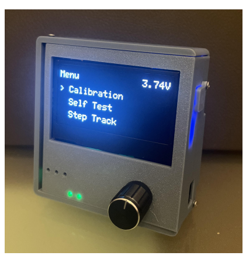
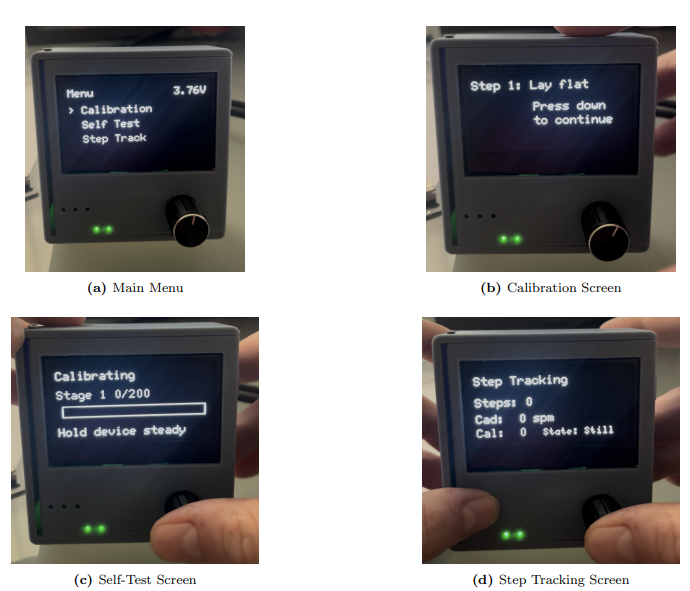
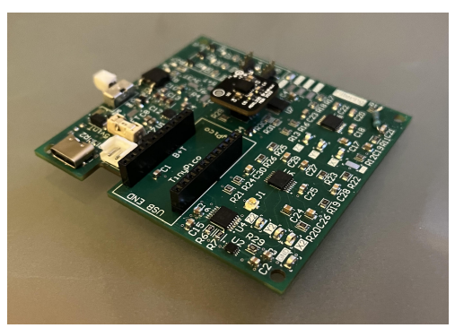
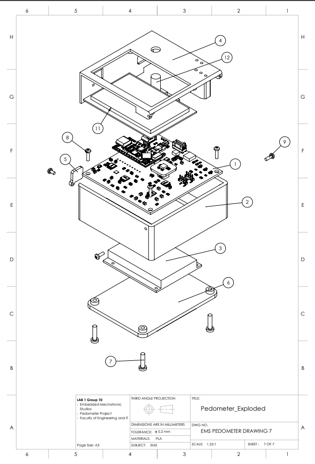
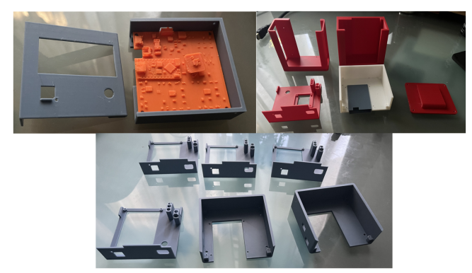

Embedded systems / Electronics / Mechanical design
EMS Pedometer
A hip-mounted activity tracker combining a custom PCB, motion sensing and an interactive OLED interface in a 3D-printed enclosure.
Project overview
Developed as a team project at UTS, the EMS Pedometer is a portable activity-monitoring prototype intended for elderly users and assisted-living applications.
The device measures movement using a three-axis ADXL335 accelerometer. Signal conditioning and embedded processing support step counting, cadence estimation, classification of stationary, walking and running activity, and potential fall detection.
An OLED display and rotary encoder provide access to tracking information, calibration and self-test routines. Wi-Fi telemetry allows motion data and detection behaviour to be inspected during development and testing.
My contribution
I was responsible for the peripheral and system input/output subsystem, GUI development and mechanical enclosure. My work connected the device's electronics, embedded software and physical user interface.
- Designed the OLED, rotary encoder and indicator LED circuitry in Altium Designer.
- Contributed to schematic capture, PCB placement, routing, footprint checks and design-rule validation.
- Developed the C++ GUI controller, menu navigation and OLED screen-rendering functions.
- Created a menu simulation using sample values to check layouts and transitions before integration.
- Designed the enclosure in SolidWorks and produced multiple 3D-printed prototypes.
- Worked with the team to integrate the interface with calibration, self-test, step tracking and fault handling.
Hardware and electronics
The system uses an ESP32 TinyPICO as its central controller, an ADXL335 accelerometer, a 2.42-inch SSD1309 OLED display and an Adafruit I²C rotary encoder with a push button. A rechargeable 3.7 V, 1200 mAh LiPo battery provides portable operation.
The OLED and rotary encoder share an I²C bus. This reduces wiring and conserves GPIO pins, while separate GPIO outputs control the indicator LEDs.
The custom four-layer PCB brings the subsystems together. My peripheral circuitry and layout work considered signal routing, power connections, connector access and integration with the enclosure.
Embedded interface and software
I developed a state-based interface in C++. Rotating the encoder moves through the menu, and pressing its button selects an operating mode.
The menu provides calibration, self-test, step tracking, step-count reset and a built-in Pong game. During tracking, the display presents the step count, cadence, estimated calories and current movement state.
A dedicated GUI controller separates screen rendering from the underlying subsystem logic. This makes the interface easier to maintain as different parts of the system evolve.
I implemented a dirty-flag rendering mechanism so the OLED updates when displayed content changes. This avoids unnecessary redraws and reduces I²C communication.
Enclosure design
I designed and iterated the enclosure in SolidWorks, using 3D-printed prototypes to check component fit, assembly and access to the user controls.
The design needed to accommodate the PCB and battery while keeping the display, encoder, charging interface and indicator LEDs accessible.
The final enclosure measures approximately 78 × 81 × 35 mm, excluding the encoder knob and modular attachments. Its attachment system supports different mounting configurations.
Testing and results
My subsystem testing covered encoder navigation, button selection, OLED initialisation, calibration prompts, self-test feedback, tracking displays and battery-voltage presentation. These checks passed in the documented validation.
The team's complete hardware testing compared the device count against manually counted steps:
- Walking: 208 detected from 200 steps — 4% error.
- Running: 203 detected from 200 steps — 1.5% error.
- Mixed activity: 311 detected from 300 steps — approximately 3.7% error.
- Two final demonstration tests: 47 detected from 47 steps in each test.
These hardware trials met the project's 5% step-count error target. Broader offline testing identified a limitation: general daily movements produced 6.9% error, showing that non-stepping motion could still trigger false detections.
What I learned
This project gave me practical experience taking electronics from a schematic through PCB manufacture, assembly and integration with embedded software.
Moving from smaller programs into a multi-file C++ codebase strengthened my understanding of modular software design, state machines and collaboration through version control.
Enclosure iterations also showed how closely mechanical design depends on PCB placement, connector positions and user access. Earlier integration checks are a lesson I will carry into future projects.
Project gallery
Scroll sideways to explore the device and its development.




